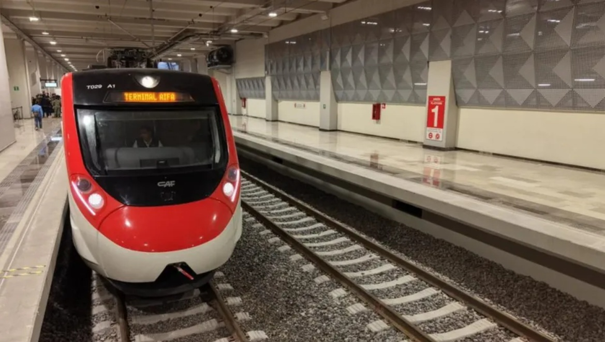
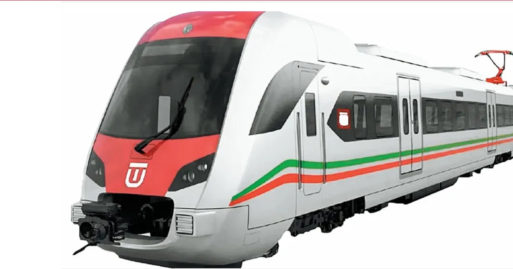
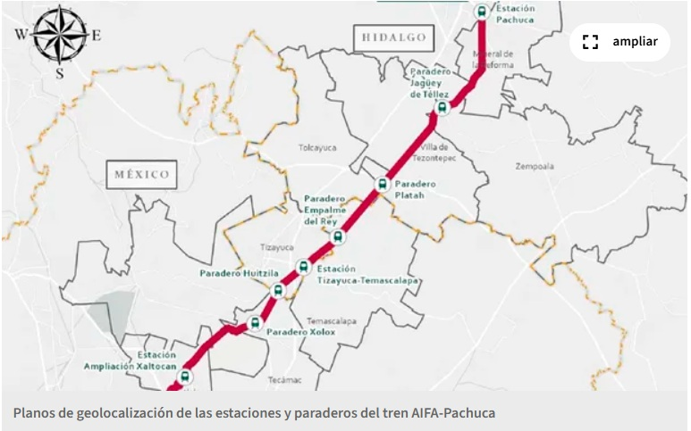

Descubre cómo los grandes proyectos de movilidad en el corredor Tizayuca, Pachuca, Tecámac y Zumpango reducen tiempos de traslado y disparan la plusvalía de tu nueva inversión.
La ampliación del Tren Suburbano hacia el Estado de Hidalgo conectará de forma directa zonas estratégicas como Tizayuca y Pachuca con el centro de la Ciudad de México, optimizando los traslados de miles de familias.

Vistas y proyecciones de las rutas que transformarán la movilidad del corredor norte.


Te ayudamos a evaluar qué desarrollo se alinea mejor con tus necesidades de transporte y presupuesto.
Solicitar Asesoría Personalizada